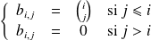
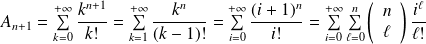
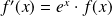

Sujet PSI 2015-59 : Séries entières / corrigé complet
Le sujet est téléchargeable ci-dessous.
Le corrigé des questions mathématiques est de Cédric Faure, et les indices aussi ! Merci à lui.
Question
1. Avec le logiciel, créer un tableau
 tel que pour tout
de
on ait :
tel que pour tout
de
on ait :

Pour créer ce triangle de Pascal, je définis au préalable une fonction binom(n, k).
Elle s'appuie sur la relation de récurrence
 .
.
def binom(n, k):
if k == 0:
return(1)
if k == 1:
return (n)
return ( (n / k) * binom(n - 1, k - 1) )
def tab_b(n):
B = np.zeros((n + 1, n + 1))
for i in range(n + 1):
for j in range(n + 1):
if j <= i: B[i, j] = binom(i, j)
return(B)
Voici ce que renvoie la fonction précédente pour .
>>> tab_b(8)
array([[ 1., 0., 0., 0., 0., 0., 0., 0., 0.],
[ 1., 1., 0., 0., 0., 0., 0., 0., 0.],
[ 1., 2., 1., 0., 0., 0., 0., 0., 0.],
[ 1., 3., 3., 1., 0., 0., 0., 0., 0.],
[ 1., 4., 6., 4., 1., 0., 0., 0., 0.],
[ 1., 5., 10., 10., 5., 1., 0., 0., 0.],
[ 1., 6., 15., 20., 15., 6., 1., 0., 0.],
[ 1., 7., 21., 35., 35., 21., 7., 1., 0.],
[ 1., 8., 28., 56., 70., 56., 28., 8., 1.]])
On note
et pour tout
 de
, on pose
.
de
, on pose
.
Question
2. a. Montrer que pour tout
 de
, la série de terme général
, pour
de
, la série de terme général
, pour
 de
, est convergente.
de
, est convergente.
On utilise la règle de d'Alembert (
),
quand
à
fixé. Donc la série converge.
On note sa somme.
Question
2. b. Donner la valeur exacte de et .
.
.
Question
2. c. Exprimer pour tout
 ,
en fonction de
.
,
en fonction de
.
 .
Donc
 .
.
Question
2. d. En déduire les valeurs exactes de
 pour
dans
.
pour
dans
.
Dans ce cas de figure, il était nécessaire de faire les questions précédentes pour pouvoir effectuer ce calcul.
def A_nplus1(np1):
'''np1 représente n + 1, pour np1 >= 2 renvoie la liste des Ai pour 0 <= i <= np1'''LA = [m.e, m.e]
for i in range(2, np1 + 1):
LA.append(sum([binom(i - 1, k) * LA[k] for k in range(i)]))
return( LA )
>>> A_nplus1(12)
[2.718281828459045, 2.718281828459045, 5.43656365691809, 13.591409142295227, 40.77422742688568, 141.35065507987036, 551.8112111771861, 2383.9331635585827, 11253.686769820446, 57483.505826423425, 315252.7350555377, 1844544.5003374543, 11453744.157549547]
On considère la série entière .
Question


Pour tout
 de
, on note
.
de
, on note
.
Question
3. b. Donner une représentation à l'écran de
 sur un intervalle convenable.
sur un intervalle convenable.
def f_59(x, N = 12):
LAn = A_nplus1(N)
return( sum( [LAn[k] * pow(x, k) / m.factorial(k) for k in range(len(LAn))] ) )
J'ai borné a priori
 à 12 en exploitant le sujet. Avec une définition par défaut de
, je peux vérifier mon hypothèse (que 12, c'est peut-être déjà proche de l'infini...).
à 12 en exploitant le sujet. Avec une définition par défaut de
, je peux vérifier mon hypothèse (que 12, c'est peut-être déjà proche de l'infini...).
>>> f_59(0.1)
3.019740552945522>>> f_59(0.1, 30)
3.0197405529455232>>> f_59(1)
15.130850744211667>>> f_59(1, 20)
15.154218106065054>>> f_59(1, 30)
15.15426223592969>>> f_59(1, 50)
15.154262241479268Je modifie dans un premier temps ma valeur par défaut à 30 pour obtenir une estimation de
 .
.
def Visu_f_59(Intervalle):
FX = [f_59(x) for x in Intervalle]
plt.figure('Représentation de f sur [' + str(Intervalle[0]) + ', ' + str(Intervalle[-1]) + ']')
plt.plot(Intervalle, FX)
plt.show()
>>> Visu_f_59(np.linspace(-1, 1, 200))
Question
3. c. Montrer que
est solution sur
d'une équation différentielle linéaire homogène que l'on précisera.
(produit de Cauchy)
Donc .
Question
3. d. En déduire une expression de
sans le signe de sommation et une nouvelle représentation à l'écran de
sur un intervalle convenable.
L'équation différentielle donne . Or , donc .
def f_59bis(x):
return( m.exp( m.exp(x) ) )
def Visu_f_59bis(Intervalle):
FX = [f_59(x) for x in Intervalle]
FXbis = [f_59bis(x) for x in Intervalle]
plt.figure('Représentation de f sur [' + str(Intervalle[0]) + ', ' + str(Intervalle[-1]) + ']')
plt.plot(Intervalle, FX, color = 'red')
plt.plot(Intervalle, FXbis, color = 'black')
plt.show()
>>> Visu_f_59bis(np.linspace(-1, 1, 200))
Question
3. e. Avec cette expression donner une nouvelle méthode pour calculer les
et vérifier pour
de
.
On sait avec la question 3. c. que  , que , donc que , .
def Anbis(n):
# je sèche...Cette question nécessite un module de calcul formel hors programme ici. C'est un sujet probablement issu des anciens programmes où l'aspect informatique était réalisé avec maple, un logiciel de mathématique utilisant le calcul symbolique.
Question
3. f. Préciser le rayon de la série entière
 .
.
Remarque :
Je sèche un peu sur cette question.
Je pense que le sujet attend un argument du style "
est développable en série entière sur
 , donc
aussi, donc le rayon vaut
, donc
aussi, donc le rayon vaut
 ".
".
Mais la composition de séries entières (qu'on utilise ici) n'est pas au programme. Et si on veut expliciter ce développement à la main
(le calcul n'est pas compliqué), on doit utiliser un théorème d'interversion de sommes doubles, ou de sommation par paquets, qui n'est pas non plus au programme.